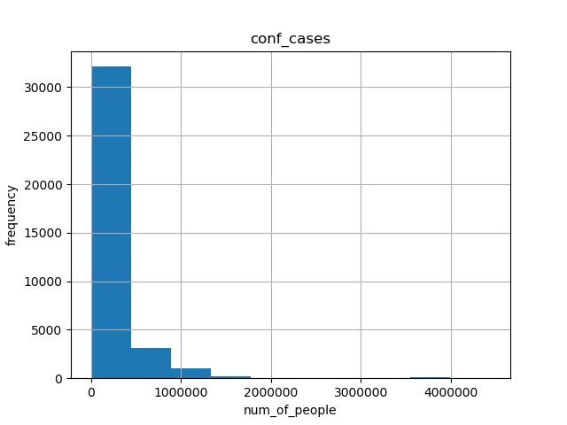
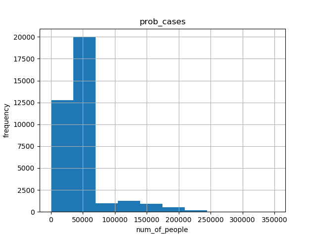

4.3 Histograms and Correlations
4.3.1 Histograms
- For CDC dataset, we made histograms of tot_cases, conf_cases and prob_cases.
- The abscissa represents the interval of the data box, and the ordinate represents the number of people.
- We can see that the histogram shapes of tot_cases and conf_cases are very similar. And the frequency range also crystallizes. Since tot_cases is obtained by adding conf_cases and prob_cases, we can conclude that the size of tot_cases is mainly determined by the size of conf_cases.
1. historgram for tot_cases

2. historgram for conf_cases

3. historgram for prob_cases

4.3.2 Correlations
4.3.2.1 correlation between tot_cases and tot_death
- In this picture, We can see that the scattered points formed by tot_cases and tot_death present multiple curves shapes. And by observing these shapes, we can conclude that the overall relationship between these two data is proportional.
- In addition, if we observe the scatter plot in the figure, we can find that the scatter points are not completely concentrated together to form a sphere, but form multiple curves, starting from (0, 0). Such a result may reflect the relationship between the total number of diagnoses and the total number of deaths in different states, or it may be the influence of the season, which makes the image present such characteristics.
4.3.2.2 correlation between tot_cases and prob_death
- In this picture we can see that the scattered points also form many curves that are close to straight lines, instead of clustering into a cluster. The analysis of this situation is the same as the analysis in the first picture.
- What is worth noting is the scattered point set of two approximate horizontal lines in the figure. The following one reflects the situation that prob_death is 0 but tot_cases is not 0 happens many times. The above item reflects that when prob_death occurs with a high frequency between 0 and 1000, this situation is caused by filling the blank part of prob_death with the average value.
- The resaon for this method is： If we do not fill in, we will lose nearly half of the data , because it is time series data, if the data loses a long period of time, it will be difficult to compare the data characteristics of different time periods. For example, the influence of the season on the epidemic situation in a certain state.
4.3.2.3 correlation between tot_death and prob death
- In this picture, we can find that the relationship diagram between pro_death and tot_death is very close to the relationship diagram between pro_death and tot_cases. Since tot_death and tot_cases are close to a linear relationship, such a result can also be inferred.